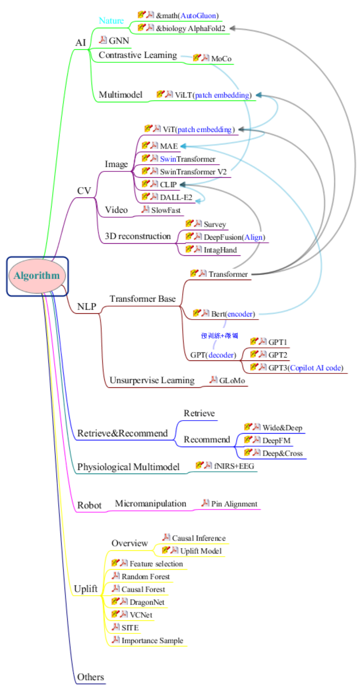
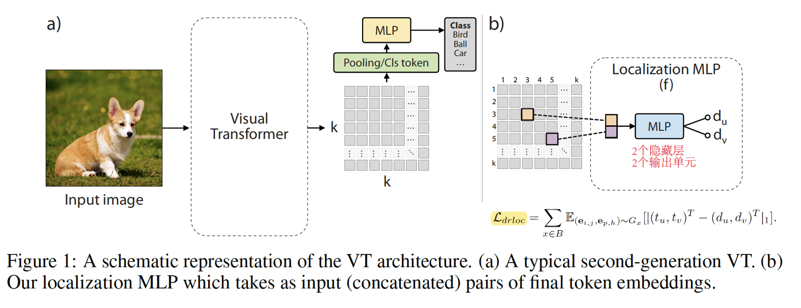
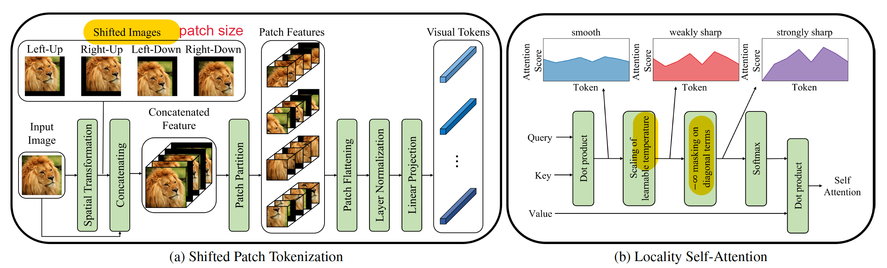
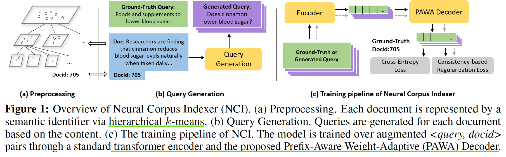
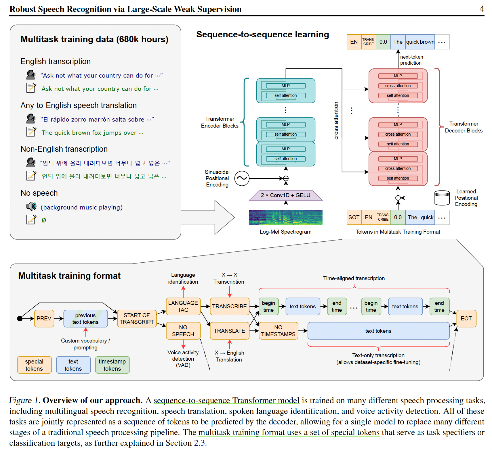

Papers Reading
阅读大纲

Paper Summary
对比学习论文总结
学习视频：
| 阶段 | 代表工作 | ||||
|---|---|---|---|---|---|
| 百花齐放（18-19中） | Inst Disc: memory Bank, 每张图都是一个类别（个体判别） | Inva Spread: end-to-end, 在同一mini-batch中选正负样本 | CPC V1：用预测未来的代理任务做对比学习 | CMC：增大同一物体不同视角的互信息 | Deep cluster |
| CV双雄（19-20中） | MoCo V1: queue + momentum encoder | SimCLR V1: MLP(projection head) + 数据增强 | CPC V2 | Infomin | |
| 不用负样本 | MoCo V2: V1 + MLP + aug + 增大epoch | SimCLR V2: large, 2层MLP, momentum encoder | Swav: multi-crop, 图片一个视角预测另一个视角，和聚类中心比 | ||
| Transformer | MoCo V3: V2 + SimSiam | BYOL(匹配->预测) =》BN Blog =》BYOL V2 BYOL =》Sim Siam(stop gradient) =》DINO |
|||
CLIP改进论文总结
学习视频：
| 领域 | 代表工作 |
|---|---|
| 语义分割 | Lseg: Language Driven Semantic Segnatation: zero-shot CLIP, dense feature, image encoder: DPT (ViT + decoder), supervise learning(依赖mask手工标注)目标函数非对比学习 |
| GroupVit: Semantic Segmentation Energes from Text Supervision: ViT + group block + group tokens(hpy聚类中心) | |
| 目标检测 | Open-Vocabulary ViLD: CLIP的预训练image encoder作为teacher学习image embedding对比 |
| GLIP：Grounded Language-Image Pre-traing: 伪标签， phrase grounding | |
| 图形学 | CLIPasso: saliency initial, semantic loss + geometric loss |
| 视频 | 图文检索 CLIP4Clip: 时序图像文本融合：mean pooling效果最好; Transformer/LSTM; early fusion(tight)效果差 |
| 动作识别 ActionCLIP：temporal shift module | |
| 图像文本 | CLIP-ViL 用回图像文本下游任务 |
| 语音 | AudioCLIP |
| 三维 | PointCLIP depthCLIP |
| CLIP改进工作可以总结为三类： 1. 直接使用CLIP预训练模型得到更好的特征和现有框架得到特征进行融合(改动最小) 2. CLIP当做teacher，将其训练得到的特征用来蒸馏，加速现有模型训练(中间) 3. 借鉴多模态对比学习思想，定义自己任务的正负样本计算对比loss，实现zero-shot |
|
视频理解论文总结
学习视频：
传统手工特征方法：
(image) SIFT -> (Video) STIP -> (光流) DT/IDT -> (全局特征) IDT + FV
深度学习方法：
| 方法 | 代表工作 | |
|---|---|---|
| CNN | DeepVideo(CVPR2014): Sports 1M Datasets, 失败的尝试 | |
| Two-Stream | Two-Stream(nureons2014): Spatial stream + Temporal stream late fusion | |
| TDD(CVPR2015): 手工IDT+沿轨迹堆叠光流 | ||
| Beyond Short Snippet(CVPR2015): 使用LSTM增强特征，实际上最后一层+LSTM没那么有用（帧短抽到的特征差不多） | ||
| Conv Two-Stream(CVPR2016): early fusion, Spatial fusion(max/concat/stack Conv(效果最好)/sum/bilinear), Temporal fusion(3D Pooling/3D Conv + 3D Pooling) | ||
| 王利民TSN(ECCV2016): 长时间视频理解, 给视频分段后结果求共识 tips1: 使用ImageNet预训练光流, 复制参数为目标channel来初始化 tips2: partial BN, 第一层使用BN, 其余层freeze BN tips3: 数据增强, conner cropping = scale jittering |
||
| TSN+全局建模 | ||
| DOVF(CVPR2017): face rencting encoding | ||
| TLE(CVPR2017): end-to-end, bi-linearing encoding | ||
| ActionVLAN: VLAN | ||
| 3D Conv | C3D(ICCV2015): 3D版VGG, 网络深, 提供一个好特征可以做下游任务 | |
| I3D(CVPR2017): 利用2D预训练模型, 同时使用光流刷爆UCF101, 证明2D向3D迁移的有效性 | ||
| Non-local NN: 使用plug and play(即插即用)的non-local block(self-attention)长时间建模，验证了多block效果更好/td> | ||
| R(2+1)D(CVPR2018): 3D拆成空间2D+时间1D(二者利用特征投射融合), 训练简单效果好 | ||
| SlowFast: Slow(标准I3D)少帧小输入大网络 + Fast多帧大输入小网络 later connection, Fast时间维度不下采样 | ||
| Hidden Two-Stream: 将光流学习融入网络，不需要抽光流 | ||
| TSM(ICCV2019): shift 2D网络 | ||
| 总结: 由于抽光流耗时且占内存，兴起了3D Conv, 从C3D到I3D, 之后的演变主要为四方面: 1. 改进2D网络: R3D, MFNet, STC 2. 2D结合3D：S3D, R(2+1)D, ECO, D3D 3. 长时序处理：LTC, T3D, non-local, V4D 4. 高效率：CSN, SlowFast, X3D |
||
| Vision Transformer | Timesformer: Space-Time Attention降低复杂度: Divided ST A; Sparse Local Global A; Axial A(T+W+H) | |
| ViViT, VidTr, MViT... | ||
Paper Reading Notebooks
| Filed | Paper | Date |
|---|---|---|
| CV: Image | VTs-Drloc | 22-11-24 |
| SPT_LSA_ViT | 22-11-25 | |
| CV: 3D Construction | TransformerFusion | 22-11-08 |
| Neural Deformation Graphs | 22-11-09 | |
| Optimize Non-Rigid Tracking | 22-11-10 | |
| NLP: Retrieval | Neural Corpus Indexer | 22-12-21 |
| Audio | Whisper | 22-11-17 |
CV - Image
Efficient Training of Visual Transformers with Small-Size Datasets
- 【NeurlIPS2021】 ArXiv Code
- 简介：使用小数据集优化训练Visual Transformer，训练加速，泛化能力增强。
- 关键技术：
- 验证实验SOTA VTs(CvT、Swin、T2T)在小数据集上效果不好
- VT由于缺少卷积归纳偏置，设计自监督代理任务，从图片中提取额外的信息学习空间关联，增加dense relative localization loss($L_{drloc}$)，即插即用。
- Limitation：fine-grained嵌入网格效果不好

Vision Transformer for Small-Size Datasets
- 【2021】 ArXiv Code
- 简介：使用SPT+LSA解决由于Vision Transformer缺少局部归纳偏置不能在小数据集上训练的问题
- 关键技术：
- Shifted Patch Tokenization：利用邻接像素空间关系，扩大感受野
- Locality Self-Attention Mechanism：使用Diagonal Masking增加不同token之间的注意力分数 + 通过Learnable Temperature Scaling控制输出分布的平滑度

CV - 3D Reconstruction
TransformerFusion: Monocular RGB Scene Reconstruction using Transformers
- 【NeurlIPS2021】 ArXiv Code
- 简介：Transformer在单RGB Video室内场景三维重建中的应用
- 关键技术：
- Coarse-to-fine融合：coarse重建全局场景，fine只重建接近表面处的精细特征，最后将特征融合解码为更高分辨率场景。
- 多视图特征融合：每次最多使用K张图片训练，加载超过K张图片时去除attention权值最小的图片，一直保持使用K张图片；
- Limitation: 遮挡、不完全场景、透明物体重建鲁棒性差。未来研究方向可以使用自监督损失，通过稀疏卷积和局部几何先验获得更高分辨率的几何保真。
Neural Deformation Graphs for Globally-consistent Non-rigid Reconstruction
- 【CVPR2021】Paper Code
- 简介：使用GNN进行非刚性4D重建
- 关键技术：
- 全局+局部优化，损失分别计算；全局优化所有帧变形图，局部多MLP表示框
- 使用单帧图像多视图一致+变形表面一致来计算循迹和变形
- Limitation: 输入特定为64^3的SDF网格；纹理特征不鲁棒；未来可开展稀疏3D卷积和其他特征如颜色重建损失计算工作。

Learning to Optimize Non-Rigid Tracking
- 【CVPR2020】ArXiv
- 简介：RGBD非刚性循迹图网络的收敛优化
- 关键技术：
- 使用CNN端到端学习深度特征匹配，使得高斯牛顿求解器可以解决大非刚性变形场景
- ConditionNet预处理求解器，增加PCG求解速度
- Limitation：3D场景遮挡问题建议直接从3D数据中提取特征；场景流真实数据难获取，建议在合成数据集上学习
- Trick：数据增强；深度图滤波预处理

NLP - Retrieval
A Neural Corpus Indexer for Document Retrieval
- 【NeurlIPS2022】[ArXiv](https://arxiv.org/abs/2206.02743v1) - 简介：基于Transformer的sequence-to-sequence架构，给定qurey生成相关文档id - 关键技术： 1. 和DSI一样，是端到端的文档检索模型 2. prefix-aware weight-adaptive (PAWA) 解码器生成文档id 3. 基于对比学习的一致性正则损失 - Limitation：模型过大不利于部署；检索速度有待提高；model-based难以进行新文档更新 - 参考：[沐神论文精读](https://www.bilibili.com/video/BV1Se411w7Sn/?spm_id_from=333.788&vd_source=486265fa677326a8f53894f05277bfb9)
Audio
Robust Speech Recognition via Large-ScaleWeak Supervision
- OpenAI Arxiv
- 简介：基于Transformer通过大尺度弱监督学习自动语音识别（ASR，Automatic Speech Recognition）模型，模型可以不微调直接进行zero-shot迁移。
- 关键技术：
- 数据预处理：从网络上收集了68万小时的多语言（98 种语言）和多任务（multitask）监督数据对Whisper进行了训练。预处理使用了三种自动过滤方法：检测并删除机器生成的转录；使用语音检测器确保语言和转录匹配；识别并删除低质量数据。
- 模型：基于encoder-decoder的Transformer架构，其中解码器通过训练不同特殊的token识别单个任务，以此实现多任务统一训练。
- Limitation：由于使用现成的Transfomer架构并没有进行过多改进，会出现错误结果。可以对现有模型的解码策略、微调、正则化、数据增强、数据多样性、增加预训练等进行改进。
- 参考：沐神论文精读 知乎

All articles in this blog are licensed under CC BY-NC-SA 4.0 unless stating additionally.
Related Articles


Comment